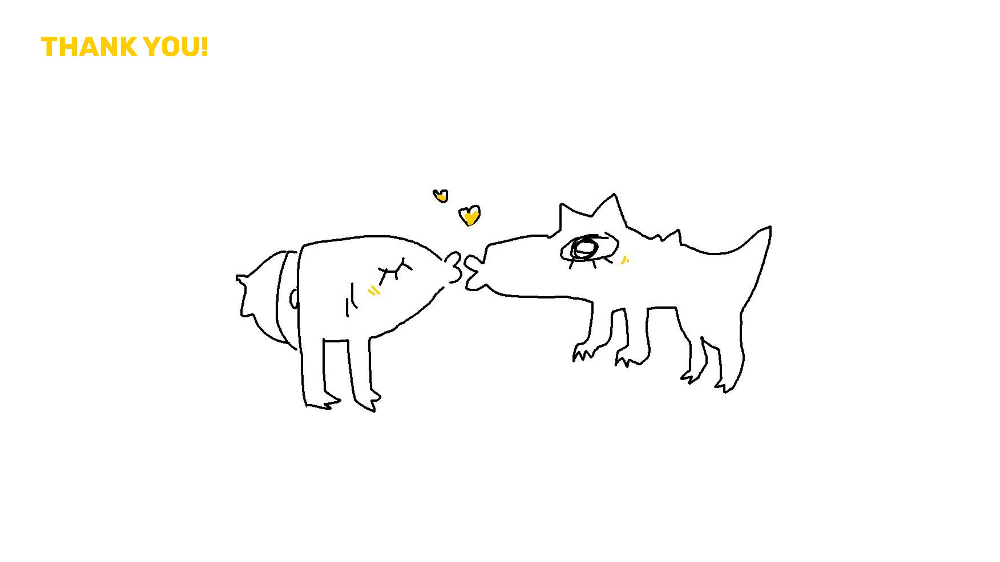
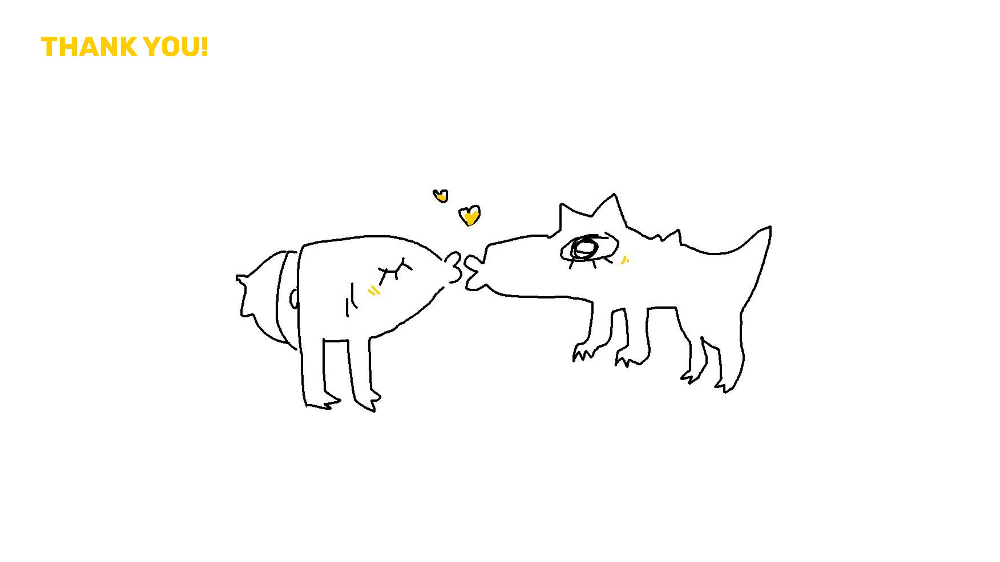

Spring 2018
AIGA Monsters
Visualization of the 13,514 2017 AIGA design census answers
Opporunity Space /
Visualize the data provided in the 13,514 answers of the 2017 AIGA design census.
We wanted the data to be more “human” and more realistic, to tell the story of each designer who responded to the design census. We depicted the data by associating certain responses with certain visual forms (ie. job satisfaction to head shape), to generate monsters to show a designer’s series of responses.
We created an interactive web experience where a user can answer a set of questions taken from the AIGA design census, and watch their own personalized monster get built and see how many other designers they compare to who took the survey. At the end, they can also explore other designers in their local area. We also have a handheld print component and onboarding video to introduce the project.
Team Members
Maddy Cha
Allissa Chan
Rachel Glasser
My Roles
Cleaning the AIGA data using
Python and coding interactive
website using with Maddy
Tools
After Effects
Illustrator
HTML/CSS/JQuery
Python
Timeline
Feb-May 2018


Design Process
 

© katie q chen 2022